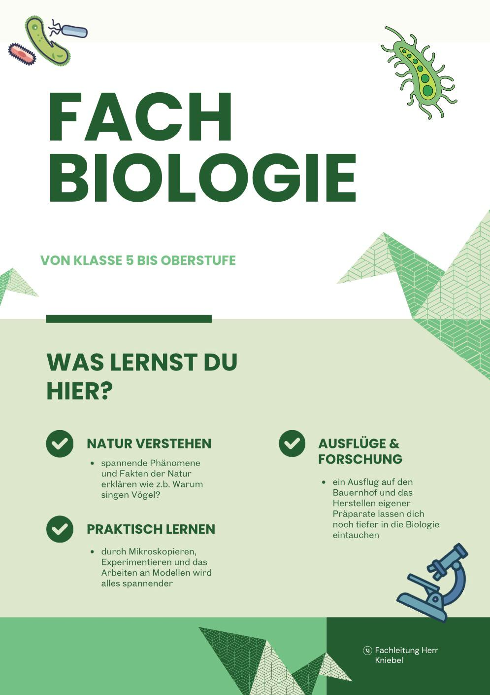
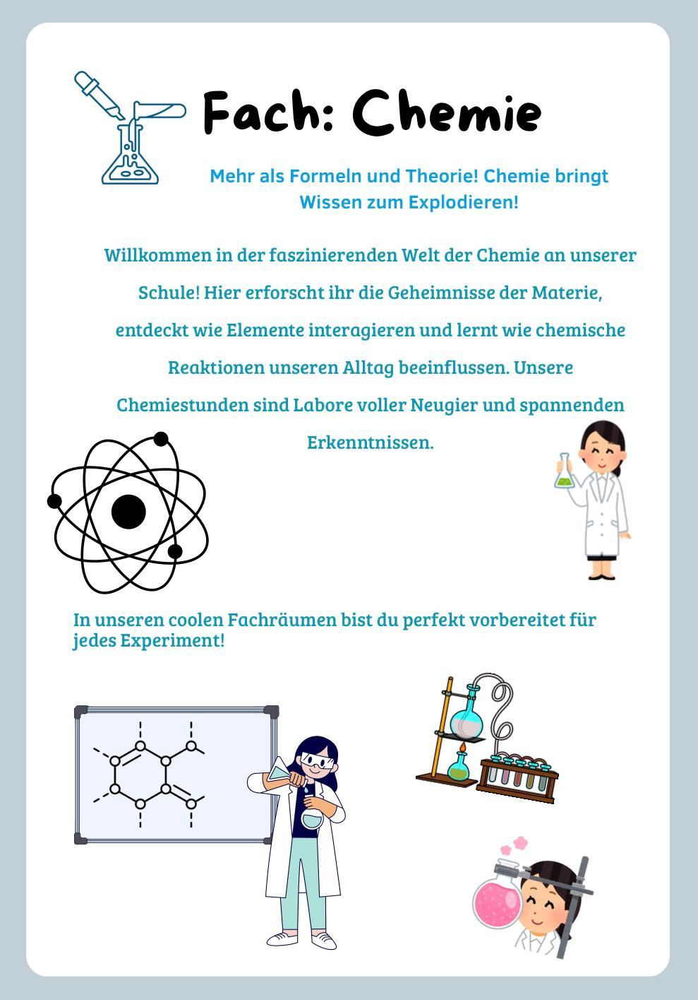
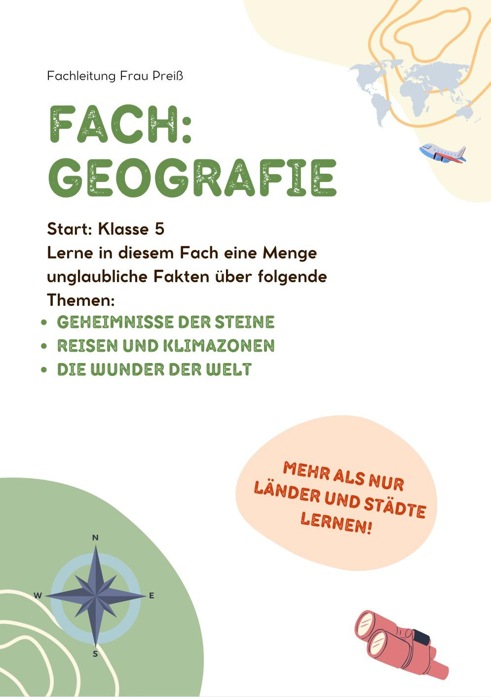
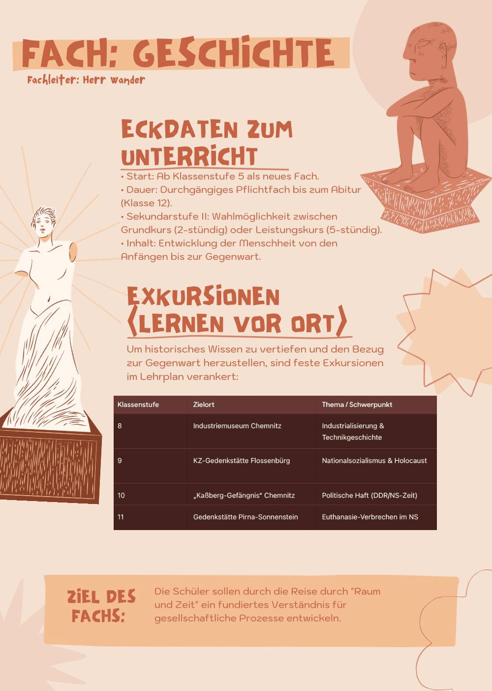
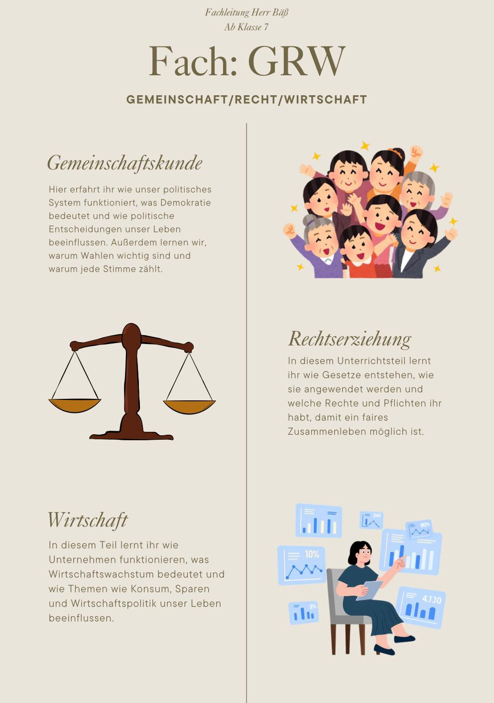
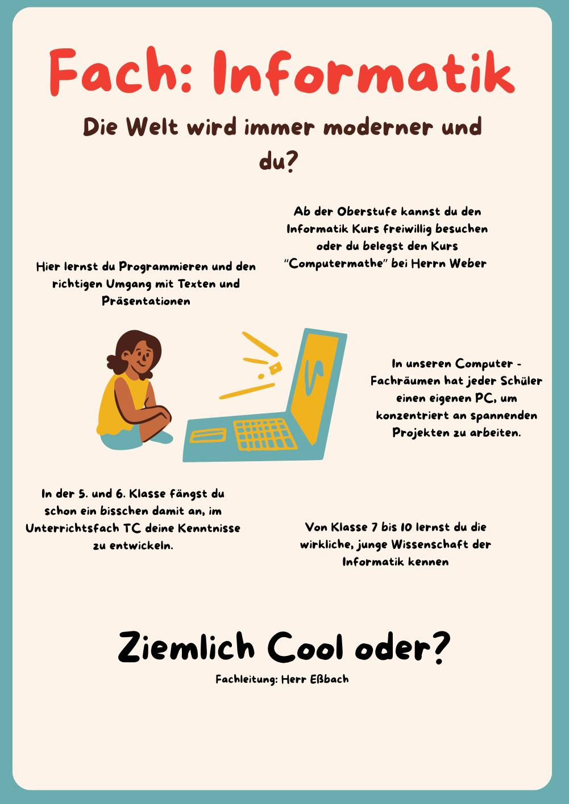
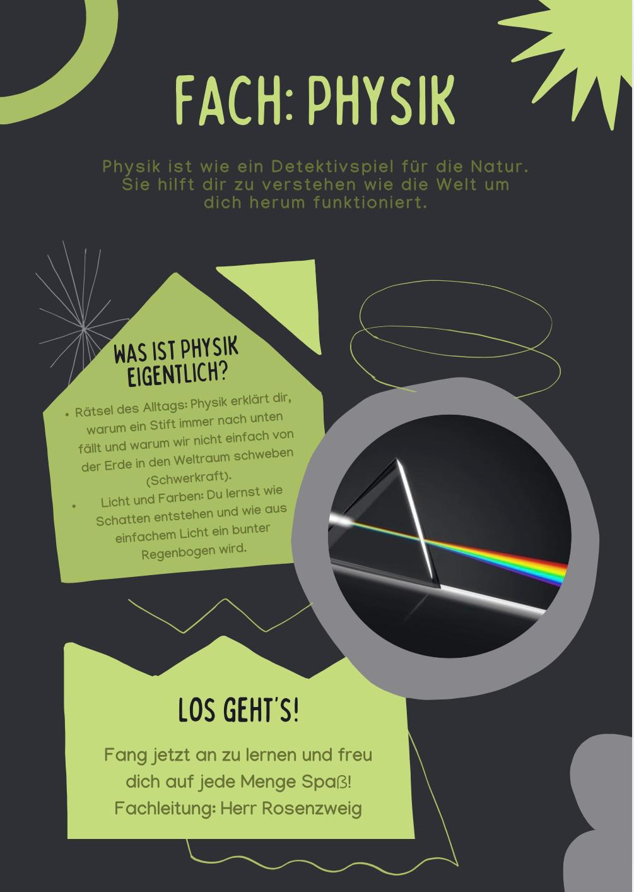
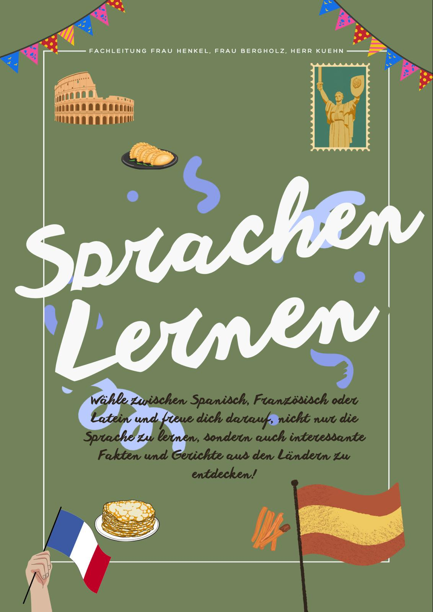
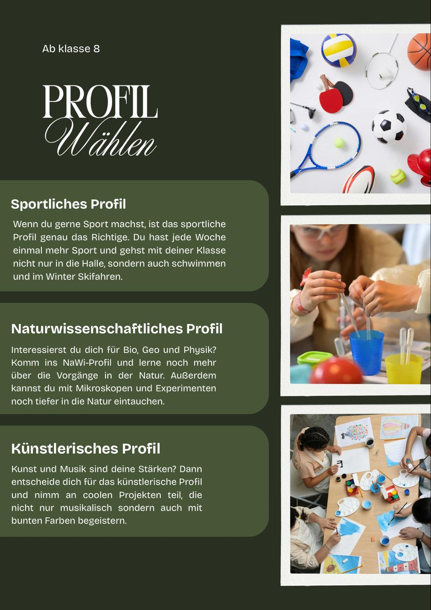

Biologie

Chemie

Geografie

Geschichte

GRW

Informatik

Hier erfährst Du alles Wichtige über unsere Fachbereiche - von den Inhalten über spannende Projekte bis zu den Besonderheiten jedes Faches. So bekommst Du einen klaren Überblick und kannst die Vielfalt unserer Schule kennenlernen.







Lust auf eine neue Sprache?
Ab der 6. Klasse hast Du die Wahl zwischen Spanisch, Französisch und Latein.
So kannst Du neue Länder und Kulturen kennenlernen und entdecken, wie vielfältig unsere Welt ist.

Ab der 8. Klasse kannst Du dein Lieblingsprofil wählen:
künstlerisch, sportlich oder naturwissenschaftlich.
Dort kannst Du Neues ausprobieren, deine Talente entdecken und noch besser in dem werden, was Dir Spaß macht!

Nutze die Symbole auf den einzelnen Folien und erkunde unser Schulleben!